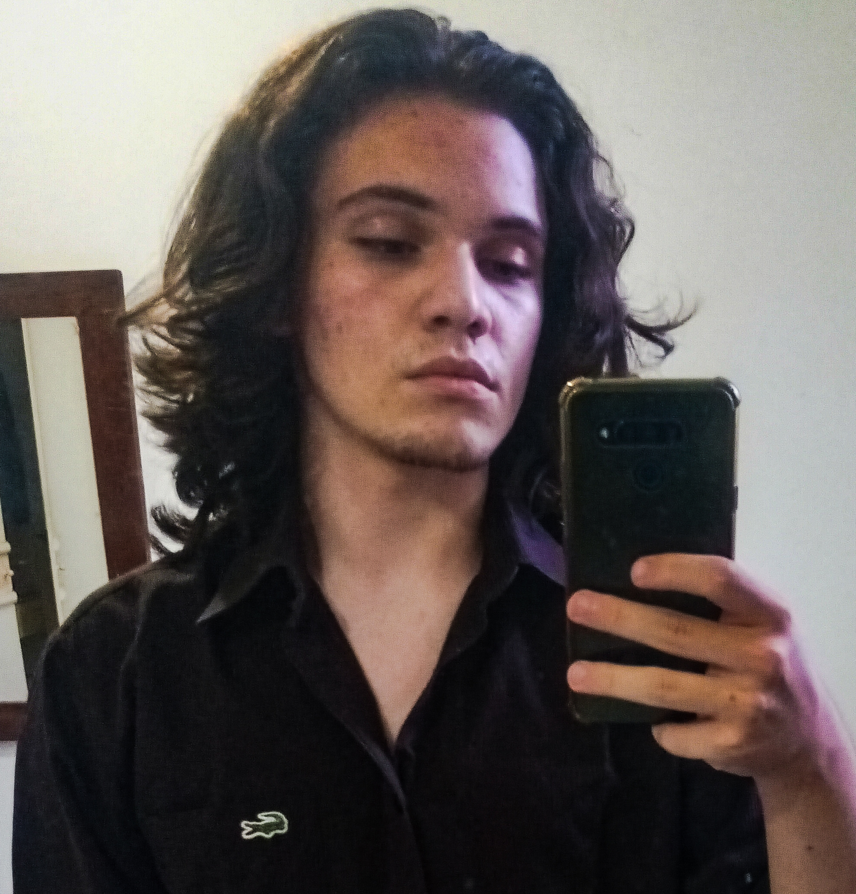

Carta de apresentação

Olá, meu nome é Pedro Luís Rickli Torques, tenho 15 anos, nasci em Curitiba e atualmente moro em Florianópolis. Sou um aluno do 2º ano do ensino médio com curso integrado de Desenvolvimento de Sistemas do SESI/SENAI de Florianópolis. Planejo seguir carreira na área de TI, especificamente cibersegurança. Gosto de ler, escrever, caminhar, e ouvir música.